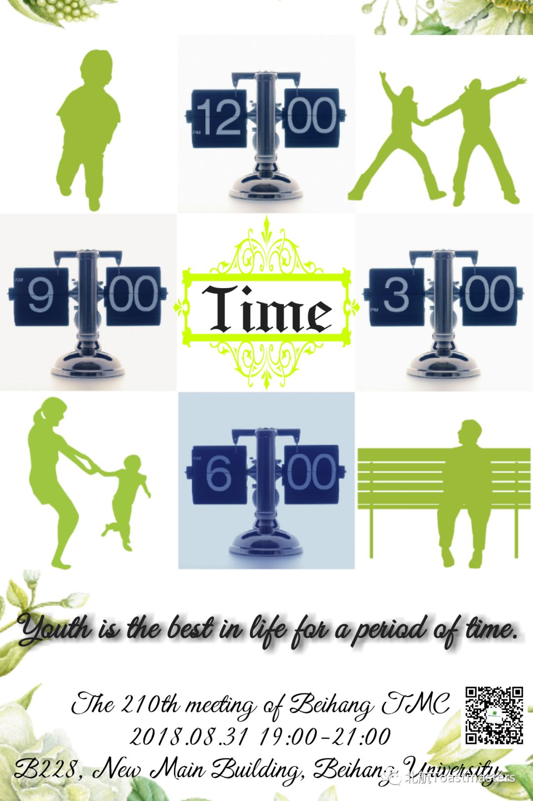
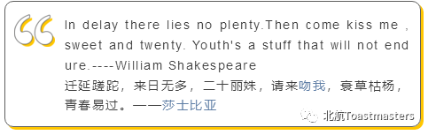
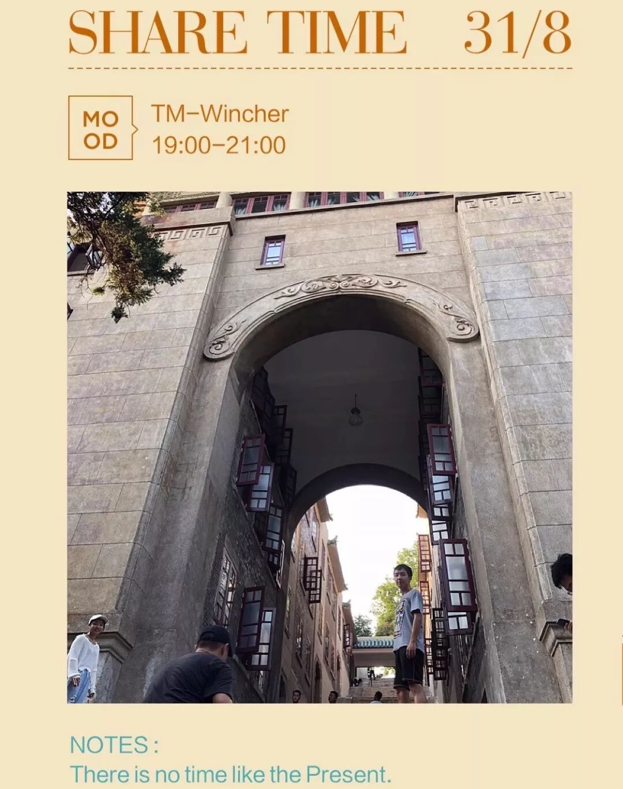
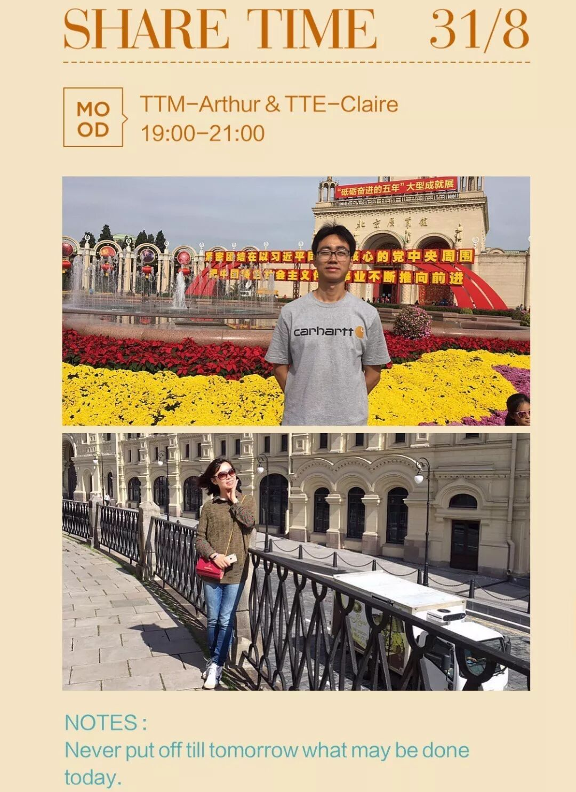
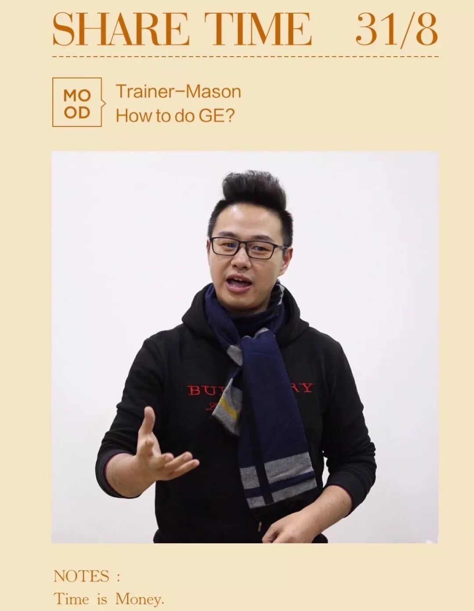
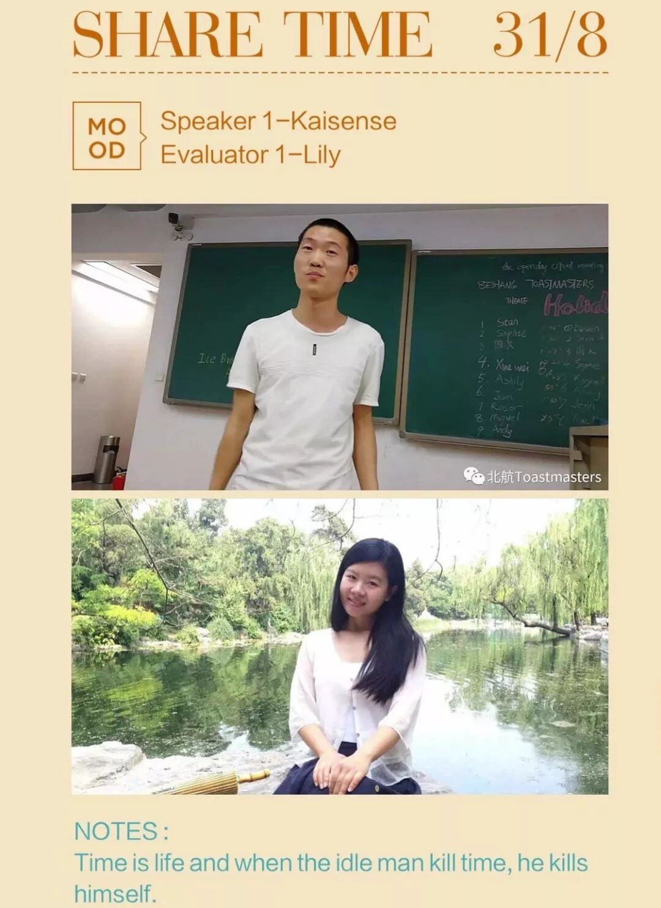
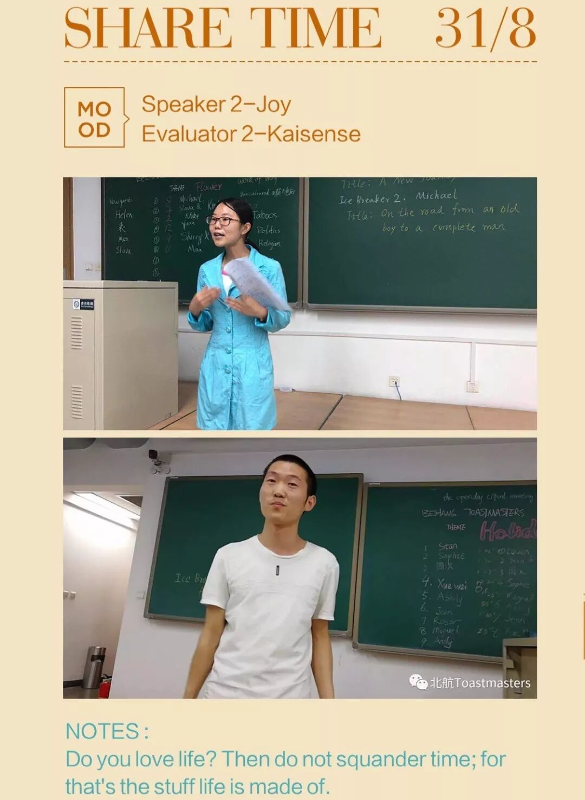
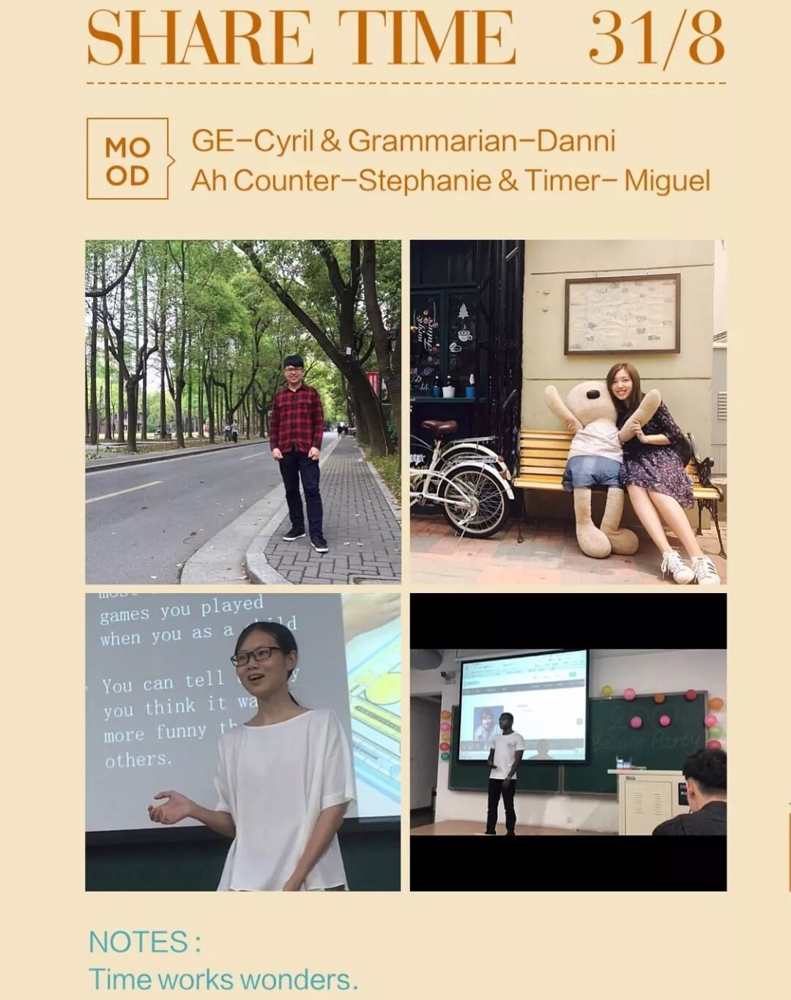

Toastmaster—Wincher

Table Topic Session

Mason- How to do GE

Prepared Speech Session


Evaluation Team

Quiz Master——Sun

Time: 19:00-21:00, Friday, 31th August
Venue: Room B228, New Main Building, Beihang University
BeihangToastmasters Club is a students' union.
At the same time, we belong to a non-profit international organization called Toastmasters International.
Toastmasters International (TI) is a non-profit educational organization that operates clubs worldwide for the purpose of helping members improve their communication, public speaking, and leadership skills.You can find us by the following map of Beihang University.

原文链接（公众号关闭后可能失效）：
https://mp.weixin.qq.com/s/Fu4SWjLiNKyXZ5JyI8b49g
https://mp.weixin.qq.com/s/Fu4SWjLiNKyXZ5JyI8b49g
第 486/539 篇 · 北航Toastmasters英文演讲俱乐部公众号存档
本页为抢救式本地归档，图文已永久保存。
本页为抢救式本地归档，图文已永久保存。